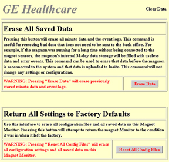

Operating Documentation
Direction 5133315-3, Rev# 14
Signa EXCITE HD 1.5T Service Methods
Module Version 7.0, Version Date 10/26/10
Operating Documentation |
The Set Time/Date page allows the setting of the internal time and date for the Magmon. This process must be done via a laptop connection, and cannot be done remotely. The internal time and date are used to timestamp the Minute Data and the Event Log items. The time zone setting is required to synchronize the MagMon3’s time to the back office time.
| NOTE: | The Magmon3 does not automatically change settings when daylight savings time goes into effect. |
SeeIllustration 1 for details on the following steps.
Set the Date, Time, Month, Year, Hour, and Minutes by clicking on each drop-down menu and making a selection.
Set the Time Zone by selecting the time zone for your area from the drop-down menu. For example, if in Germany, select: GMT +1.
Illustration 1: Set Time and Date

The Magnet Type page configures the Magmon3 to one of the predefined magnet types. The number of sensors, type of compressors, and alarm parameters will vary between magnet model types, so the magnet type selection is a key element in the operation of the magnet and magnet monitor.
Select the magnet type from the drop-down menu that most closely matches the system type that the Magmon3 will be monitoring. If not sure about what magnet type to select, contact the Magnet Support Team and your regional On Line Center.
Illustration 2: Magnet Type

Select the proper compressor type from the menu shown above. Compressor 2 type should only be used when two compressors are connected to the same magnet.
Click [Submit System Type] after identifying the magnet type.
A network connection must be made between the Magmon3 and the High-Field Open (HFO) Host Computer's LAN Port 7. Go to Appendix, Section 1, Prerequisite Information for Non-Proprietary Operation for network information on HFO Systems.
Refer to Illustration 3. The following is the communication path for supporting the Coldhead Switching feature on the HFO system:
Click [Network].
Enter the information provided by the customer's network administrator for IP Configuration and DNS Configuration.
Click [Submit Changes].
| ||||
| On the Configure Network IP page, make sure the No Network connection when not in Web Mode box is NOT selected. | ||||
Illustration 3: IP Configuration Network Settings

| NOTE: | Using [Reset All Config Files] is useful when moving a Magmon3 from one system to another. |
Illustration 4: Clear Data
